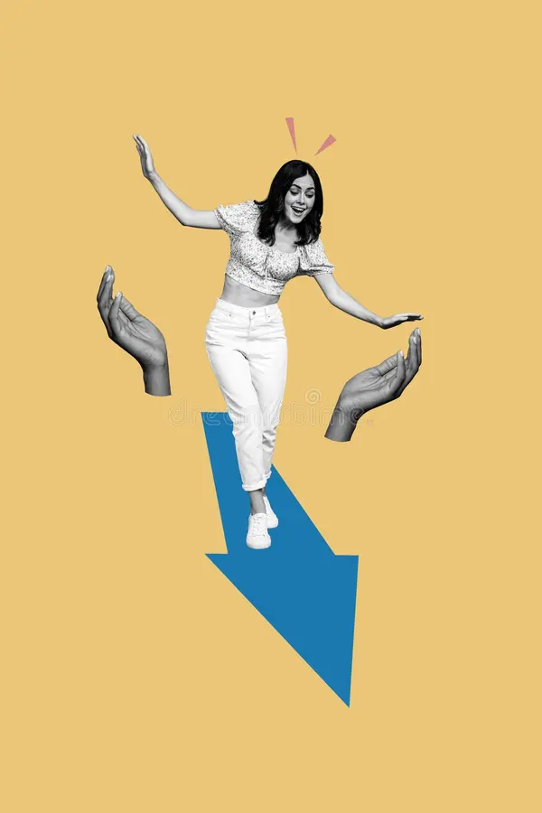
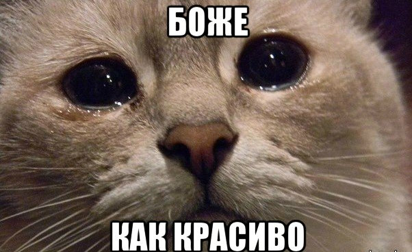
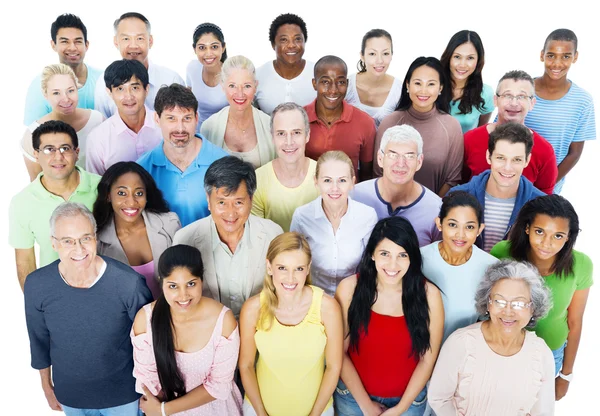
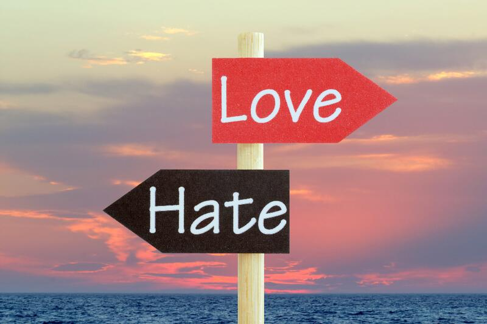
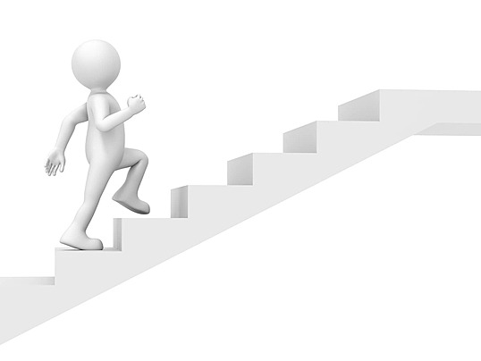
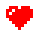

Фритрек в нулевой спринт: Подготовка к работе

</страхи>
Это было самое начало пути. На этом этапе важно было проникнуться основами и настроиться на учёбу. И, возможно, подумать, как новые знания могут повлиять на ваше будущее.
Начало обучения было очень интересным периодом, я студент, учусь на втором курсе специальности "веб разработка", и вот, я серьезно настроился на учебу, прошел тестовый спринт, понял, что фронт очень интересен, до этого в универе его не было, только какая-то база c++, ощутил, что учеба может быть не утомительной, а интересной, хоть и понимал, что дальше будет в разы сложнее. Пройдя нулевой спринт принял однозачное решение-платить за курс и начинать учебу, это была пятница 24 октября, выехал на учебу, сказал себе, что вечером оплачу курс и успею к 1-ому ноября на старт. Именно в этот день в аудитории сломалось заземление и у меня сгорел ноутбук, поэтому нулевой спринт я запомнил на всю жизнь, именно урок из него был открыт на экране, когда я вставил зарядку в розетку.
1 спринт: Я — чистый лист
</чистый лист>
На первых этапах мы работали со страхами и сомнениями, которые часто испытывают новички. Один из них — страх перед чистым листом. Это, конечно же, намного сложнее, чем боязнь куска бумаги. Часто за этим ощущением скрываются более глубокие вопросы: с чего начать? а вдруг будет слишком сложно? что, если я не справлюсь?
Первый спринт был чем-то невероятным, особенно на контрасте с универом, где по ощущениям за полтора года я научился лишь матанализу. Было абсолютно волшебно впервые иметь нечто готовое после выполнения первой проектной, испытывать искренне удовольствие от зеленой подсветки текста: "Задание принятно" после четырех ревью, ощущать, что я начал получать удовольствие, а не отвращение от кода, что я постоянно испытывал в универе. Страх чистого листа перебарывался достаточно легко, хоть и вся работа шла тяжело.
1 спринт: А если не получится?
</вдохновение?>
Первый проект — позади! Но это всё ещё самое начало пути. Радость могла быстро померкнуть и смениться ожиданием провала. Или вы, наоборот, могли вдохновиться успехами и поверить в себя.
К сожалению, уже задел эту тему в прошлой карточке, но я скорее получал вдохновение от того, что у меня получается, испытывал непередаваемое удовольствие от каждого pixel-perfect грида и радовался как ребенок, когда пустое место превращалось в цельный блок.
2 спринт: Погоня за идеалом

</идеал>
На этом этапе вы уже достаточно разбирались в основах вёрстки, чтобы понять, как много ещё впереди. Вы могли попытаться погнаться за идеалом и понять, что он недостижим. А, может, вы вовсе и не подвержены перфекционизму и вместо того, чтобы сделать идеально, старались просто сделать.
Второй спринт почему-то давался достаточно просто, и оставил мало воспоминаний, работа показалась очень чилловой. К идеалу всегда стремился, задавал даже наводящие вопросы к необязательным улучшениям ревьюрам через комментарии возле css-свойств.
2 спринт: О тех, кто рядом

</люди>
Всё это время вы были не одиноки (хотя, возможно, иногда и чувствовали, что одни против целого мира). Вас окружали одногруппники, команда сопровождения и просто близкие люди, которым можно пожаловаться, если очередной макет просто так не поддавался. Осваивать что-то новое легче, когда рядом есть единомышленники, не правда ли?.
Впервые именно на втором спринте написал одногруппникам по Я-Практикуму, спросил о помощи, так же помог некоторым ребятам, ответил на их вопросы. Очень нравится взаимодействовать с людьми в чате, никто не спамит, все задают вопросы по теме, видно людей, которые стараются сделать хорошо. Многие сбрасывают полезные ссылки, расширения для браузера и IDE.
3 спринт: Обходные стратегии

</любовь и ненависть>
На этом курсе вы постоянно решали разные задачи. В какой-то момент вам могло показаться, что решения просто иссякли. Значит, пришло время посмотреть на задачу под другим углом.
Ох, третьий спринт занимает отдельное место в моем сердце. В начале было очень тяжело, теория давалась нелегко, куча новых свойств, резиновость, адаптивность, клэмпы, медиазапросы, не успевал понять одно свойство, как появлялось новое, еще более объемное, начал посматривать ролики на ютубе, искать ответы на различных форумах, старался все понять, но было реально нелегко.
3 спринт: Когда опускаются руки

</движение>
Во время учёбы часто возникает чувство, когда не знаешь, за что хвататься. Вроде и проектную пора сдавать, и задачи хочется порешать, и в теории получше разобраться, и жизнь не забыть пожить. В такие моменты очень нужна концентрация. Вспомните, откуда вы её черпали.
Именно проектная третьего спринта начала давать мне веру в себя и некую уверенность, хоть она и была самой сложной, объемной, непонятной. Но когда я изучил кучу свойств, смог их применить, смог сделать макет под разные устройства, переключение темы через переменные-я почувствовал, что я уже очень много умею. Третья проектная дала ощущение силы и желание двигаться дальше, чтобы даже на такую работу смотреть через пару месяцев как на что-то простенькое.
«Сейчас я здесь»

</спасибо>
Сейчас вы уже очень много знаете о вёрстке. Но это только начало. Во-первых, впереди ещё много материала про «красотищу». Во-вторых, с окончанием курса учёба не заканчивается. Вёрстка — это целый мир. И этот мир постоянно меняется. Познать его полностью не получится, но это тот случай, когда важен сам процесс познания. Ведь часто путь — и есть результат.
В этой точке я ощущаю некий переломный момент, из-за сессии не успел в мягкий дедлайн, и сел за проектную за неделю до первого жесткого дедлайна, очень стараюсь успеть и ощущаю силу своих знаний. Уверен, что все смогу сдать вовремя, получу тот самый зеленый background-color на блоке с надписью: "работа принята!" И смогу смело сказать сам себе: я могу сверстать любой макет, я уже не просто ученик, а верстальщик в пути к становлению front-end девелопером. Хочу еще выразить отдельную благодарность вам, ревьюрам. Cпасибо огромное за все правки, которые вы вносите, безумно интересно разбираться с ошибкой и закреплять ее на практике, чтобы больше не допустить повторения.